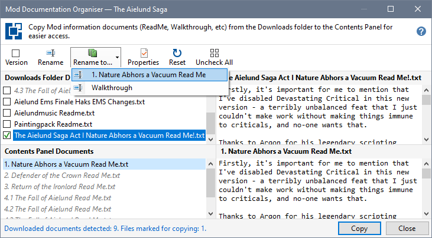
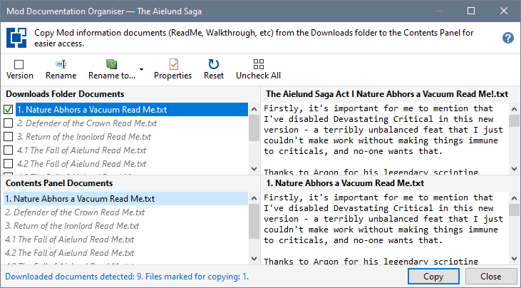

When you are updating a Mod, some of the documentation files may have been changed. In this case, it can be useful to rename a document using the same name you used for the previous version of the document.


Remove version number from document names
Rename a document using a Contents Panel name